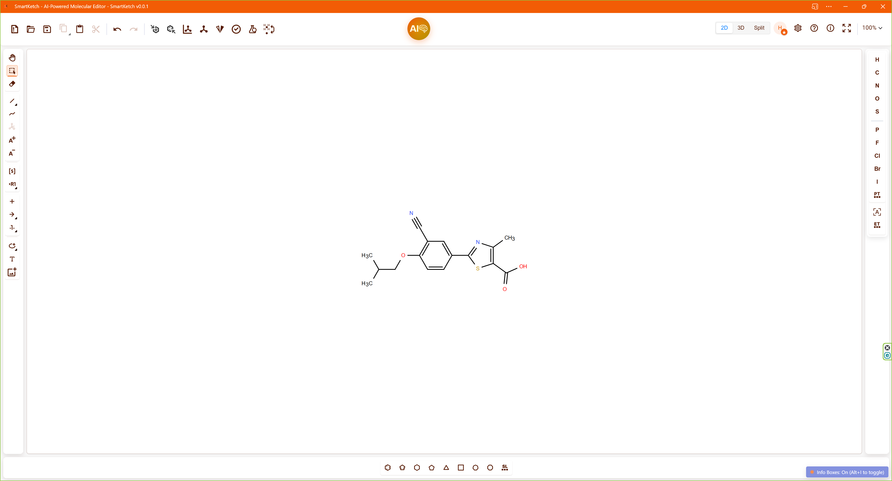
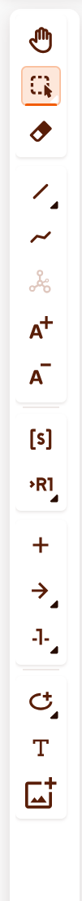
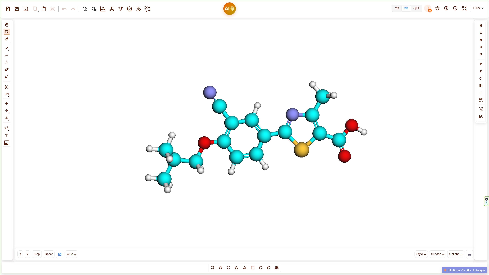
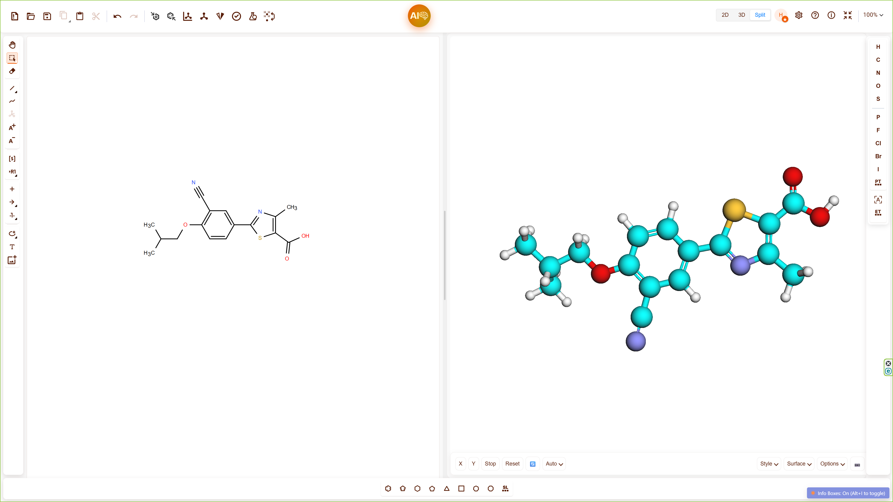
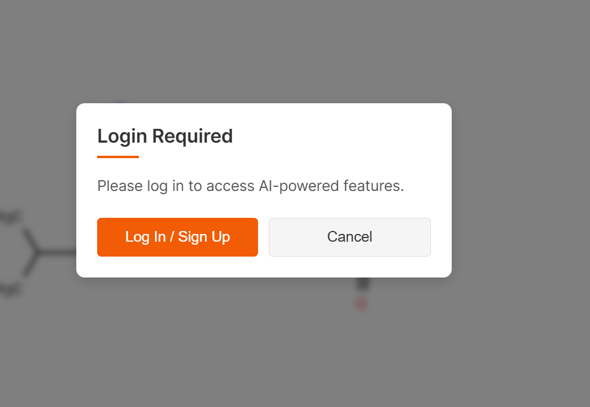
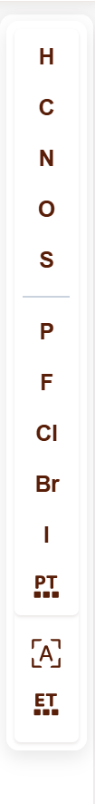

Molecular sketching powered by design, data, and AI
Smartketch opens by default in the 2D editor, the core canvas for molecular sketching. Users can draw atoms, rings, and bonds using the left toolbar. It supports organic and inorganic structures, with automatic valence validation.
 The 3D Viewer renders molecules in 3D with WebGL. It supports zooming, rotating, and panning. Use this to explore stereochemistry, bond angles, and spatial packing.
Use split view to display 2D and 3D representations side by side for real-time editing and verification.
Switch between visualization modes using the right toolbar:


Generate surface views to examine steric accessibility or molecular packing.

Export molecular data and visual assets using the Export panel from the top toolbar.


The AI assistant helps generate molecular structures based on design prompts, functional constraints, or scaffold ideas.

Login is required for advanced AI features and personalized predictions.
Smartketch provides optimized structures with drug-likeness, synthetic accessibility, or structural improvements.

Click "Apply" to load the selected structure into your canvas.

Select design targets like Drug Discovery, Scaffold Design, or Similarity Search.

Each selected molecule displays an info card with real-time properties and analysis tabs.


Compare multiple molecules side by side based on computed descriptors or design scores.
New/Save, Export, View Toggle, AI Assistant.
Atoms, bonds, rings, selection, clear.
3D display styles, color schemes, rendering options.
If you encounter issues or want to request features, please contact:
Thank you for using Smartketch!